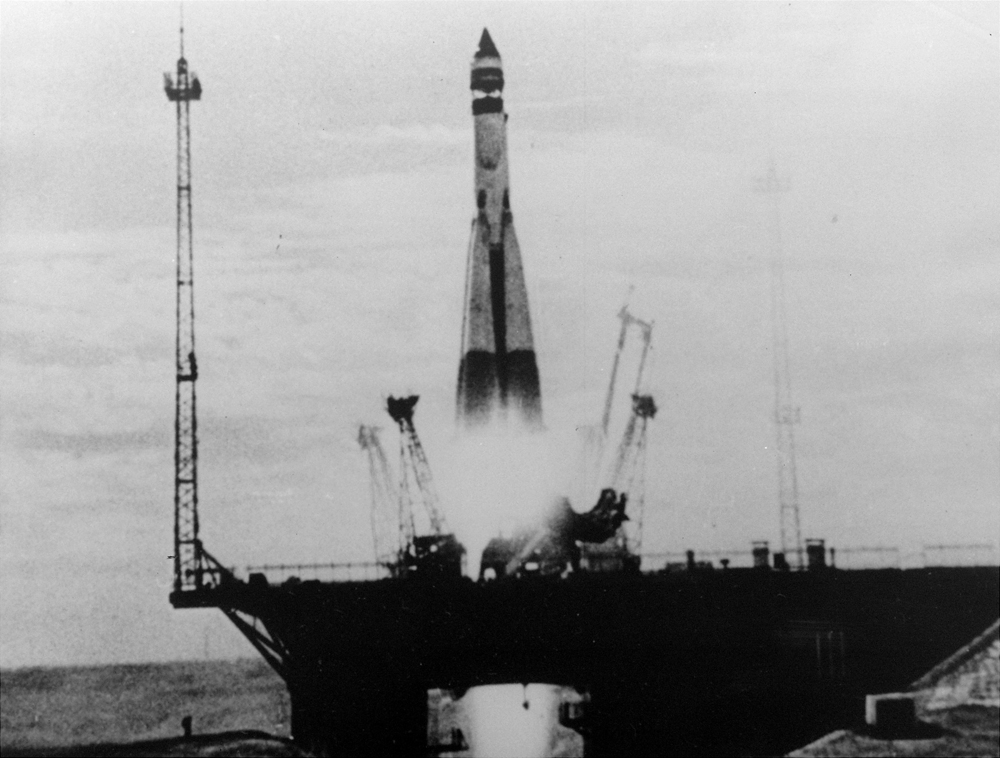

 Pierwszy krok w stronę kosmosu odbył się 4 października 1957 roku, kiedy Związek Radziecki wystrzelił satelitę Sputnik 1. Była to pierwsza w historii ludzkości udana misja kosmiczna, podczas której obiekt stworzony przez człowieka opuścił Ziemię i wszedł na orbitę okołoziemską.
Sputnik 1 był niewielką, kulistą sondą o średnicy 58 cm, wyposażoną w cztery długie anteny, które nadawały regularne sygnały radiowe. Te proste sygnały stały się słyszalnym dowodem, że człowiek zdołał dotrzeć do przestrzeni kosmicznej. Dźwięki emitowane przez Sputnik były odbierane na całym świecie, co stało się symbolem nowej ery – ery kosmicznej.
Lot trwał 21 dni, a Sputnik przemieszczał się z zawrotną prędkością ponad 28 tysięcy kilometrów na godzinę, okrążając Ziemię co 96 minut. Jego sukces zapoczątkował nową erę technologicznych osiągnięć, a także rozpoczął intensywny wyścig kosmiczny pomiędzy Stanami Zjednoczonymi a Związkiem Radzieckim. Misja zakończyła się w styczniu 1958 roku, kiedy Sputnik 1 spłonął w atmosferze, kończąc swoją misję jako pierwszy sztuczny satelita Ziemi.